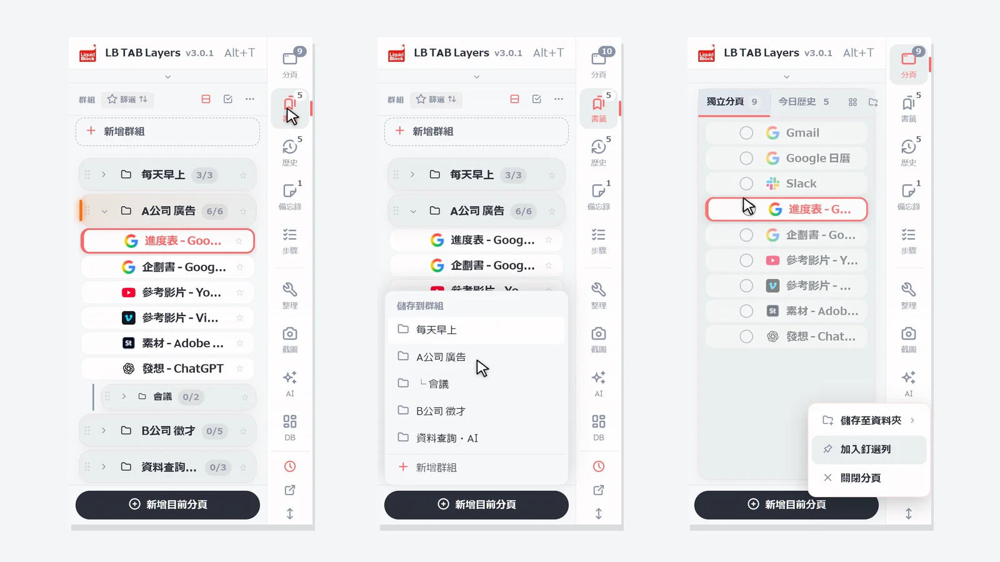
按 Alt+T（Mac 為 Option+T）開啟 LB TAB Layers。一開始只要學三件事：用下方的新增目前分頁把現在的分頁存進群組、用群組的 ▶ 一次開啟、用 ■ 一次關閉。儲存的分頁會留在 Chrome 書籤裡，關掉分頁或重新啟動 Chrome 也不會消失。
感謝你安裝 LB TAB Layers。這一頁只整理了最初 5 分鐘先知道就不會困擾的事。
想法很簡單：分頁是「現在」正在做的事，書籤是「之後」還會再用的東西，今日歷史則是今天看過內容的「紀錄」。在一個側邊面板裡，就能在這三者之間來回。
💡 隨時按 Alt+T（Mac 為 Option+T）就能開啟。按工具列上的 LB TAB Layers 圖示也可以開啟。如果看不到圖示，請從拼圖圖示把 LB TAB Layers 釘選起來。
首先：把現有的書籤放進 TAB Layers（推薦）
如果 Chrome 裡已經有書籤資料夾，先把它們放進 TAB Layers 是最快的開始方式。不用新建群組，現有的資料夾就會直接變成依工作、依主題分類的群組，在側邊面板中一目了然。
按下「從現有書籤開始（推薦）」
在安裝後出現的歡迎畫面的最上方。之後也可以從設定的「資料」→「書籤」，或大畫面（儀表板）上方的「匯入書籤」開啟。
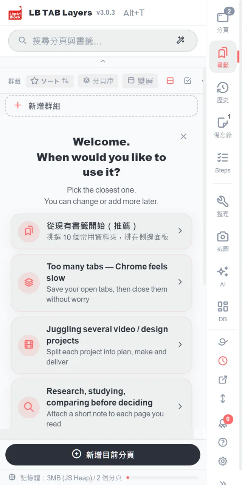
選擇常用的資料夾（先以 10 個為目標）
Chrome 的書籤資料夾會列成清單。勾選常用的資料夾。右上角會顯示「3 / 10」之類的數量。不必全部選，這也是想一想哪些書籤真正會用的好機會。
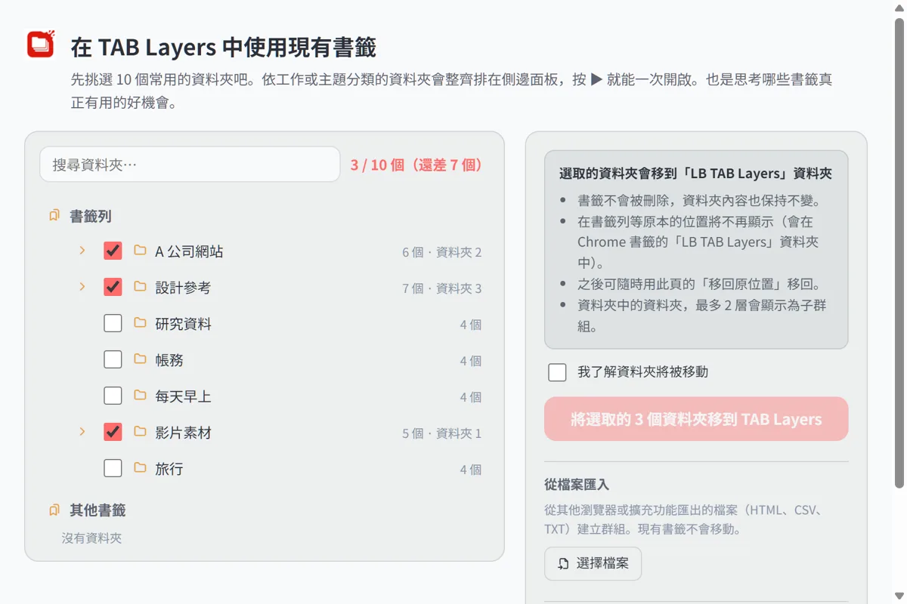
勾選「我了解資料夾將被移動」後移動
選取的資料夾會移到 Chrome 書籤中的「LB TAB Layers」資料夾。書籤不會被刪除，內容也保持不變。在原本的位置（書籤列等）將不再顯示，但可隨時用同一頁的「移回原位置」移回。
在側邊面板中以群組排列
資料夾會直接變成群組，裡面的資料夾則成為子群組。按下群組的 ▶，就能一次開啟裡面的所有頁面。
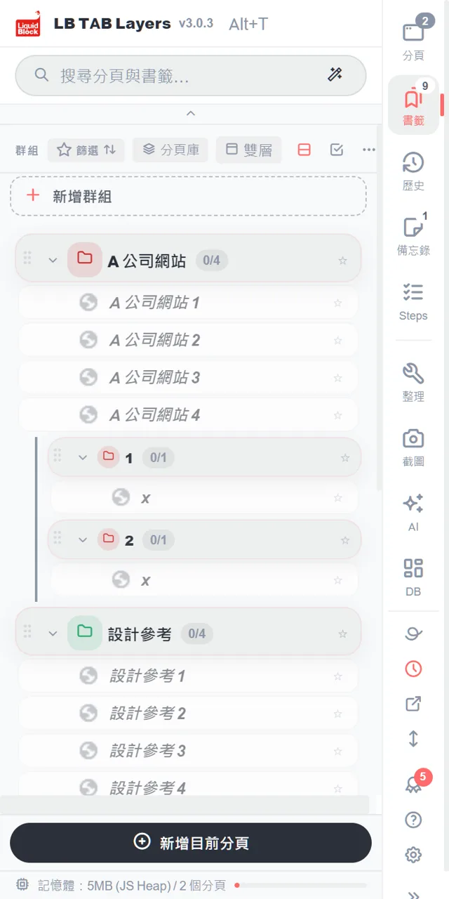
1. 畫面怎麼看
面板邊緣有一排直向的按鈕，由上而下是分頁・書籤・歷史・備忘錄・步驟。按下就會切換到該畫面。圖示右上角的數字，是開啟中的分頁數、群組數等。
- 分頁 — 目前開著、還沒儲存到任何地方的分頁
- 書籤 — 把儲存的分頁，依工作（專案）整理成群組
- 歷史 — 今天看過的網頁。沒儲存的網頁也能從這裡找回
- 備忘錄・步驟 — 工作備忘錄，以及照順序進行的檢查清單
分隔線下方是工具，一開始不用也沒關係。
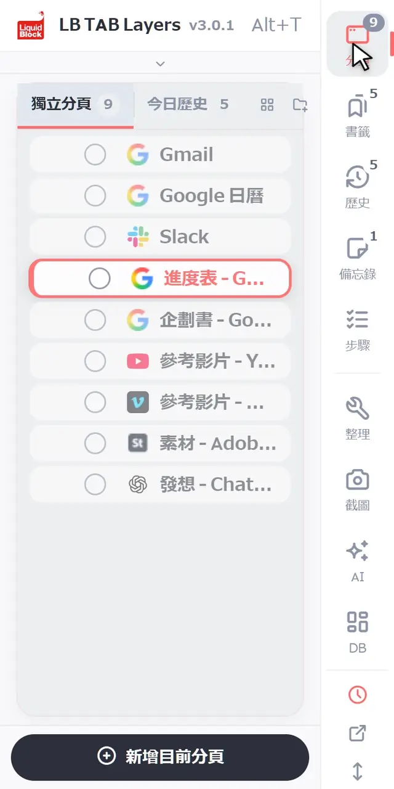
2. 基本操作
建立群組
在書籤畫面，按清單最上方的＋ 新增群組。名稱建議像「C公司 網站」「每天早上」這樣，一個工作（專案）一個群組。
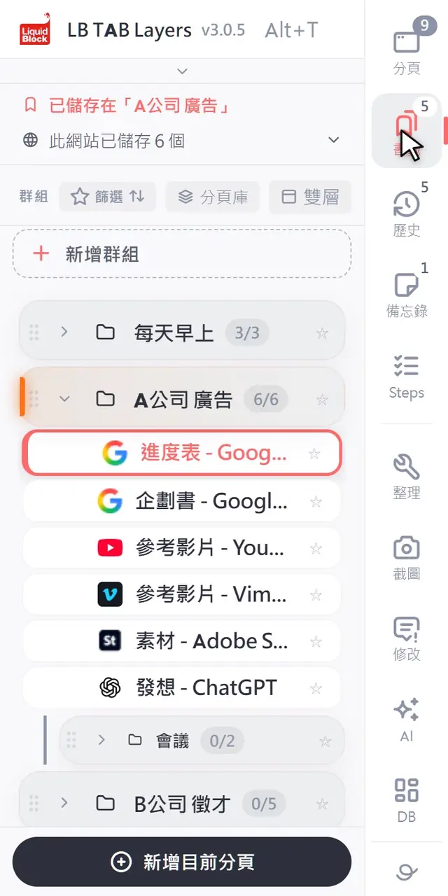
儲存目前的分頁
按面板下方的新增目前分頁，選擇要儲存的群組。已經存過的群組會顯示已儲存。
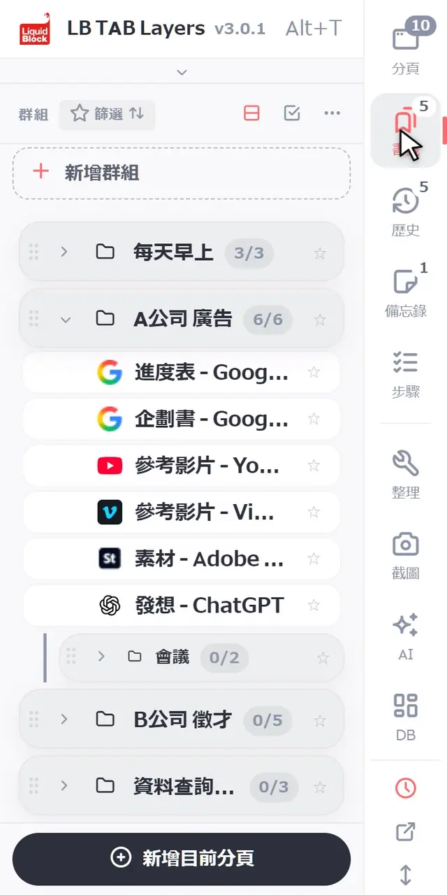
一次儲存多個開著的分頁
在分頁畫面，按分頁左邊的○就會開始選取。接著按想儲存的分頁的 ○，再從下方的放入群組選擇群組。也可以把分頁一個一個拖到群組裡儲存。
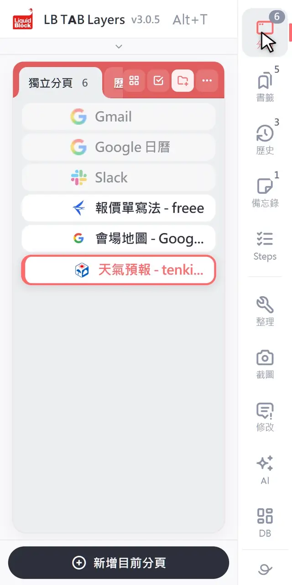
用 ▶ 一次開啟，用 ■ 一次關閉
滑鼠移到群組上會出現 ▶，按下就會開啟裡面的所有分頁。開啟的分頁會整理成與群組同名・同色的 Chrome 分頁群組。工作結束後，按 ■ 就能把那個分頁群組整個關閉。關閉後，儲存的內容仍然保留。
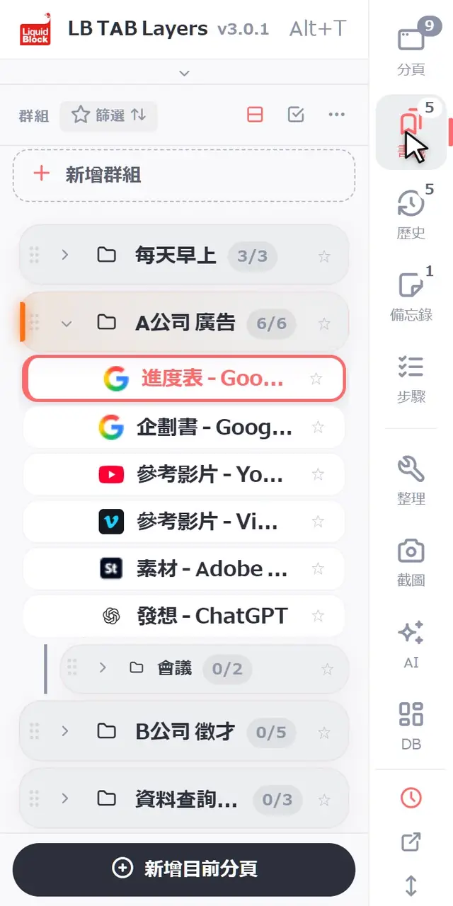
搜尋
在上方的搜尋框輸入，就能一次搜尋開著的分頁・儲存的分頁・今日歷史。打錯一點點也找得到。
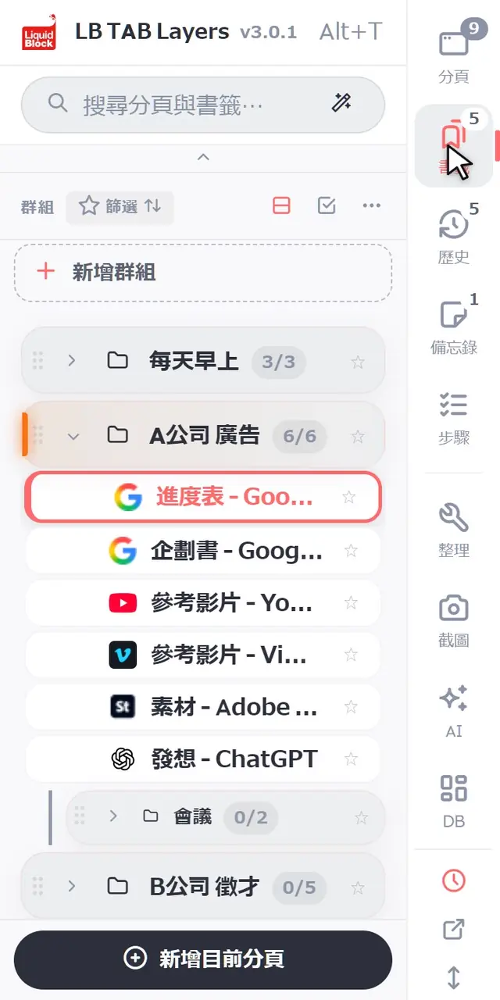
3. 方便的管理方式
一個工作（專案）一個群組
群組就像「一項工作專用的書桌」。一天的流程，靠這樣就能運轉：
- 早上 — 用 ▶ 開啟今天要做的工作群組，從昨天停下的地方繼續
- 切換工作時 — 用 ■ 關閉目前的工作，再用 ▶ 開啟下一個
- 下班時 — 只要按 ■ 關閉。明天再用 ▶ 就能回來
每天用的網站，放到釘選列
像郵件、行事曆這種每天都會開的網站，在分頁或書籤上按右鍵，選擇加入釘選列。它們會以小圖示排在面板上方，按一下就能開啟（最多 12 個）。也可以用拖曳的方式放上去。
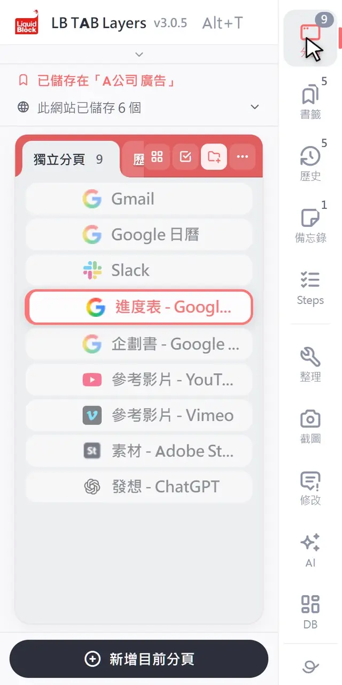
每項工作，各用一個視窗
在群組上按右鍵選擇在新視窗中開啟，就會在另一個視窗中，以該群組的分頁群組開啟。同時進行兩項工作，或在第二台螢幕上使用時很方便。
忘了儲存也沒關係，還有今日歷史
不需要每一頁都儲存。沒儲存的網頁，也能在歷史裡依今天瀏覽的順序找到。重要的放進群組，其他的就關掉，這樣剛剛好。
🔒 儲存的分頁會留在 Chrome 書籤裡。關掉分頁、重新啟動 Chrome 都不會消失，LB TAB Layers 也不會把你的書籤傳送到任何地方。備忘錄等存在擴充功能裡的資料，建議先從設定匯出備份。
更多功能，請看功能介紹。
常見問題
Q. 要怎麼開啟 LB TAB Layers？
按鍵盤的 Alt+T（Mac 為 Option+T）就會開啟。按工具列上的 LB TAB Layers 圖示也可以。
Q. 移除擴充功能後，儲存的分頁會消失嗎？
不會。儲存的分頁會以與群組同名的資料夾，留在 Chrome 書籤裡。備忘錄等存在擴充功能裡的資料會消失，請先從設定匯出。
Q. 搜尋可以找到哪些內容？
開著的分頁、群組裡儲存的分頁，以及今日歷史，可以一次搜尋。
Q. 可以免費使用嗎？
可以。免費版也能建立最多 5 個群組。今日歷史・步驟・儀表板・AI 搜尋是 PRO 功能，但安裝後 90 天內全部都能使用。